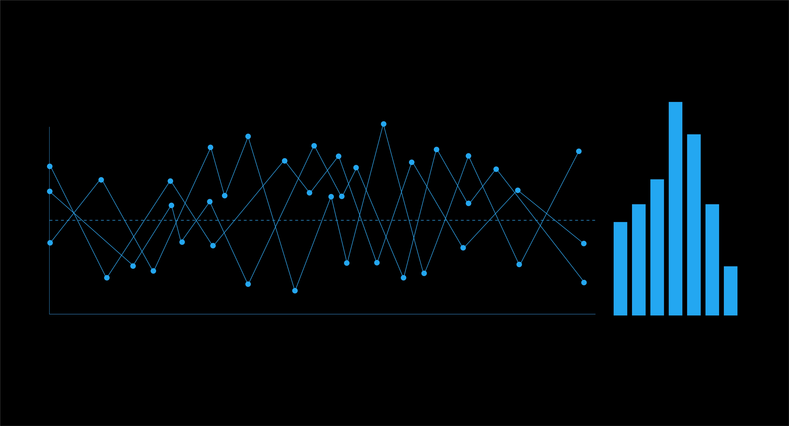

JOHN MUTUA PORTFOLIO
Data Analyst skilled in SQL, Python (Pandas), Excel, and Tableau, with a focus on transforming raw data into actionable business insights.
I build end-to-end data projects—from data cleaning and analysis to visualization—helping uncover trends that support strategic decision-making.@GitHub
Global Layoffs Analysis (2020–2023)

Objective: Analyze global layoffs to identify trends across industries and countries.
Key Insights:
- Tech industry had the highest layoffs
- Layoffs peaked in 2022
- Late-stage startups were most affected
Tools: SQL
Employee Analytics Project

Objective: Analyze employee data to understand workforce trends and identify factors driving employee turnover.
Key Insights:
- Turnover varies across education levels with individuals having Bachelors taking the lead
- Certain cities experience higher attrition rates
- Bench status may contribute to employee dissatisfaction
- Hiring trends show inconsistency over time
Tools: SQL, Tableau
Customer Analysis Dashboard

The project shows Customer Analysis visualizations done using Tableau.
Sales Data Cleaning and Analysis Using SQL

In this project, I worked with a sales dataset containing transaction-level data for various customers, products, and territories. The goal was to clean and prepare the data for analysis using SQL, uncover business insights, and prepare it for visualization in Tableau. I handled missing values, standardized inconsistent formats (such as phone numbers and dates), removed duplicates, and dropped irrelevant fields. I then performed exploratory analysis to evaluate product performance, customer value, regional sales distribution, and seasonal trends.
This project demonstrates my ability to clean messy real-world data and extract actionable insights using SQL.
Hospital Data Analysis Using Python (Pandas)

This project focuses on analyzing hospital patient data to uncover key insights related to medical conditions,
treatment costs, patient demographics, and overall hospital performance. Using Python and the Pandas library,
I performed data exploration, cleaning, and analysis to identify trends such as the most common conditions,
cost variations across treatments, patient readmission patterns, and satisfaction levels. The analysis helps highlight critical areas such as high-cost conditions,
factors influencing patient satisfaction, and potential inefficiencies in treatment outcomes,
providing valuable insights for improving healthcare decision-making.
- © johnmutua783
- Designed: 2024